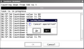
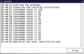

I have to write a GUI application. User sets parameters, selects files, does other preparations and finally starts calculations. These calculations are very slow, so program should visualize a progress in calculations and should allow user to break calculations.
There is another requirement from a programmer's point of view. Code of calculations should know as little as possible about GUI. In fact, it should not know about GUI at all and should work in command-line applications.
It is not obvious for me how to add GUI to the application and satisfy all requirements. So I write a prototype application in order to integrate its code to the real application.
This document is a sort of documentation. It documents some design decisions and annotates Python classes.
The task is common enough, so I publish this document and a sample application in order to share ideas. Please beware that ideas and code may be incorrect. Beware also that my Tkinter experience at moment of prototyping is one day.
Let our long operation is a countdown from 100 to 0, with some delay between each tick. Sample code is stored in the file app1.py.
import logging
import time
import gettext
_ = gettext.gettext
def calc():
logger = logging.getLogger(__name__)
for i in range(100, 0, -1):
logger.info (_('Countdown value is %i'), i)
time.sleep(.2)
logger.info(_('Done!'))
logging.basicConfig()
logging.getLogger().setLevel(logging.INFO)
calc()
Main functionality is contained in the function calc. All other code is an environment for calc. Code is not straightforward, but uses logger and gettext packages.
The gettext module provides internationalization and localization services. This is required for the main application. The main application reuses code of the prototype, so the prototype also uses gettext.
The logging module is a must-use for big applications. This module simplifies control over messages of program. The prototype application stores messages in buffer and delivers them into the log window.
The main window contains buttons “Start”, “View Log” and “Exit”.
The button “Start” runs calculations and opens a control window. The control window has the progress bar, the log window and the “Cancel” button. The progress bar visualizes a progress of calculations, and messages appear in the log window. Button “Cancel” stops calculations and closes the window.
The button “View Log” in the main window opens a history of messages of the program.
Main window |
 Control window |
 Log history |
Application is multithreaded. One thread is a GUI thread and another thread is a calculations thread.
Only GUI thread can work with GUI components. The calculations thread should not access GUI. So the calculations thread can't directly update the progress bar or the log window. Instead, it should send a message to the GUI thread, and the GUI thread updates GUI components. This description outlines a communication between threads for visualization of progress.
Button “Cancel” terminates the calculations thread. Python has no function for killing a thread, so “Cancel” handler should perform it indirectly. The handler sets a termination flag in the calculations thread or sends a special message to the calculations thread. The prototype uses the termination flag because it is the simplest solution. The calculations thread regularly checks for the flag. If the flag is set then the calculations thread sends a termination acknowledge message to the GUI thread and exits.
Delay is possible between termination and pressing the button. If interval between inspecting the flag is big, then additional complexities arise (for example, a third thread). The sample application ignores this issue because delays are small.
The calculations thread is created by a ThreadsConnector object. The function ThreadsConnector::run() starts the calculations function, wrapping the call by an error handling code.
The main goal of a ThreadsConnector object is to encapsulate the termination flag and to assist with a termination of the calculations thread. The ThreadsConnector object is shared by both GUI and calculations threads. The GUI thread calls the function cancel() to set the termination flag. The calculations thread checks the termination flag by calling the function ack(). The function ack() does nothing if the flag is not set and raises the exception ThreadsConnectorTerminateException if the flag is set.
The calculations function can finish normally or can be interrupted by the ThreadsConnectorTerminateException or other exception. The function ThreadsConnector::run() gets control in all cases. It sends a notification message into the GUI thread. The message contains an acknowledge of a termination and details on exit status. Finally, the function run() returns from the thread.
The calculations thread have to call regularly the function ThreadsConnector::ack(). It is cumbersome to write all these calls in the code of calculations. The calculations function in the prototype application does not have ack() calls at all. Instead, calls to ack() are integrated into the logger functions and progress bar functions. The sample program uses these functions, and calls to ack() are performed automatically.
The ThreadsConnector object wraps the reference to the GUI thread. It is the only place where the calculations thread knows about the GUI thread. If the calculations thread wants to send a message to the GUI thread, then the calculations thread uses the ThreadsConnector object as a proxy.
The program displays information to user through the logging system. A log item goes into two areas:
These areas are independent, so realizations of delivering are also independent.
The cumulative log history contains all log messages of the program. User clicks button “View Log” in the main window in order to view the history.
The cumulative logger lives as long as the main program. On startup, the main program creates the cumulative logger object (more precisely, an instance of the logging.Handler) and attaches it to the logging system.
When a program generates a log message, the logging system passes this log message to all registered handlers. The cumulative handler also gets the log message and remembers it for a later use.
The current logging handler instantly displays log messages in a log window. The log window is a part of the calculations status window.
The current handler lives as long as the status window. The handler is created and attached to the logging system immediately after creation of the status window. The handler is detached from the logging system before closing the status window.
The handler works in the calculations thread, so it can't write directly into the log window. Instead, the handler sends a message to the GUI thread, and the GUI threads puts a text into the log window.
The handler references and uses ThreadsConnector object. If the handler gets a log message, the handler processes it and then also executes the function ack() of the ThreadsConnector. Thanks to this functionality, the code of calculations can escape from some ack() calls and become clearer.
Progress in calculations is indicated by the progress bar.
The program initializes a progress bar controller by an estimated number of ticks. During calculations, the program executes the tick() function. When number of ticks is near to the estimated number of ticks, the calculations is near 100% complete.
The progress bar controller has and uses a ThreadsConnector object. Each time the program calls tick(), the controller calls the function ack() of the ThreadsConnector. Reason is the same as for the logger object.
The progress bar consists of two parts: a controller and a view. The controller incapsulates a logical state and data of the progress bar and provides functions for manipulating them. The view provides a GUI presentation of the state of the controller.
The code of tick() is located in the controller. The code updates internal data of the controller object. The code is executing in the calculations thread, so it can't directly update the GUI. Instead, it sends a message to the GUI thread. The progress bar view receives the messages, asks the controller for a current state and updates GUI according to the new state.
When program starts, it creates the cumulative logger. Then the program creates the main window and passes execution control into the window. At this moment the program provides three possible actions for user: exit from the program, view log and run calculations.
If user decides to exit, then the program exits. If user wants to view log, the program creates an object responsible for a view log GUI and passes the cumulative logger object as parameter. The view object creates GUI, gets set of messages from the cumulative logger and initializes the view window. The view log GUI is active till user closes it.
The main case is a running of calculations. The program creates the action controller and passes parameters to it: the calculations function with parameters and an instance of an object responsible for a look of the control window.
The action controller is responsible for coordinating objects in GUI and calculations threads. The controller creates GUI, the calculations thread, helper objects and runs calculations. It also provides inter-thread communication functions and auxiliary functionality.
The controller delegates creation of the action window to the view object. The view object creates and packs widgets by callling object functions, so it is possible to customize a presentation by subclassing the base view class.
After creation of the view window, the controller creates a ThreadsConnector object, then creates and attaches a logger object and then creates a progress bar object. Finally, it creates a calculations thread, makes GUI visible and runs calculations and GUI.
When calculations and GUI are finished, the controller detaches the logger object and returns execution to the caller.
Here is a modified version of the command-line application. The function calc is updated to work also in GUI mode.
import logging
import time
import gettext
_ = gettext.gettext
def calc(connector, progress):
logger = logging.getLogger(__name__)
progress.set(0, 100)
for i in range(100, 0, -1):
logger.info (_('Countdown value is %i'), i)
progress.tick()
connector.ack() # can be ommitted in this program
time.sleep(.2)
logger.info(_('Done!'))
if __name__ == '__main__':
logging.basicConfig()
logging.getLogger().setLevel(logging.INFO)
class dummy:
def ack(self):
pass
def set(self, a, b):
pass
def tick(self):
pass
calc(dummy(), dummy())
The only differences are:
Some remarks on changes in the function calc:
Download the prototype application.
The code is of public domain. You can use it as you want.
I'd like to get improvements both to text (proofreading, maybe rewriting etc) and to code (bug reports and fixes, adding design to windows, icons etc). Do not hesitate to send me comments and improvements.
If you have questions, please ask in comp.lang.python. Answering in newsgroups is a selfexpression, but answering in private is a technical support. I don't provide any support.
If you found this article very useful, if it saved you time, nerves and money, then I suggest you to order for me something from my Amazon's wishlist.
Oleg Paraschenko olpa@ http://uucode.com/{kind=link}
{kind=link}
{kind=link}